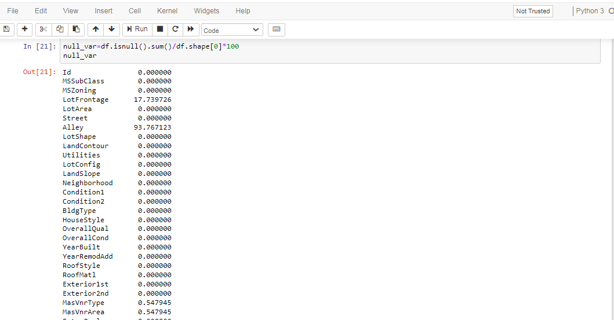

ABOUT MACHINE LEARNING
Machine learning is all about training and feeding data to algorithms to perform various compute intensive tasks. However, businesses typically face challenges in feeding the right data to machine learning algorithms or cleaning of irrelevant and error-prone data. In other words, when it comes to utilizing ML data, most of the time is spent on cleaning data sets or creating a dataset that is free of errors. Setting up a quality plan, filling missing values, removing rows, reducing data size are some of the best practices used for data cleaning in Machine Learning.
DATA CLEANING
The main aim of Data Cleaning is to identify and remove errors & duplicate data, in order to create a reliable dataset. This improves the quality of the training data for analytics and enables accurate decision-making.
Needless to say, data cleansing is a time-consuming process and most data scientists spend an enormous amount of time in enhancing the quality of the data. However, there are various methods to identify and classify data for data cleansing..
ADVANTAGES OF USING DATA CLEANING:
Boost results and revenue
Save money and reduce waste
Save time and increase productivity
Handling Missing Values
- Call The Data Set
A data set (or dataset) is a collection of data. In the case of tabular data, a data set corresponds to one or more database tables, where every column of a table represents a particular variable, and each row corresponds to a given record of the data set in question. The data set lists values for each of the variables, such as height and weight of an object, for each member of the data set. Each value is known as a datum. Data sets can also consist of a collection of documents or file
The info() function is used to print a concise summary of a DataFrame. This method prints information about a DataFrame including the index dtype and column dtypes, non-null values and memory usage.
- Identify Missing Values
isnull() Detect missing values for an array-like object. This function takes a scalar or array-like object and indicates whether values are missing ( NaN in numeric arrays, None or NaN in object arrays, NaT in datetimelike).
isnull(). sum() returns the sum of total number of missing values in the data set.

A heatmap is a graphical representation where individual values of a matrix are represented as colors. A heatmap is very useful in visualizing the concentration of values between two dimensions of a matrix. This helps in finding patterns and gives a perspective of depth.


- Drop missing values
The dropna() function is used to remove missing values. Determine if rows or columns which contain missing values are removed. 0, or 'index' : Drop rows which contain missing values.


- After cleaning the data

The benefits of data cleaning
Knowing how to clean data is advantageous for three reasons:
- It prevents your company from throwing money at strategies based on wobbly or even faulty analyses
- It prevents you from making the wrong conclusions, which could cost you your reputation
- It makes your analyses run faster. Correct, properly cleaned and formatted data speed up computation in advanced algorithms
In this guide, we will take you through the process of getting your hands dirty with cleaning data. Get ready, because we will dive into the practical aspects and little details that make the big picture shine brighter.
CONTACT